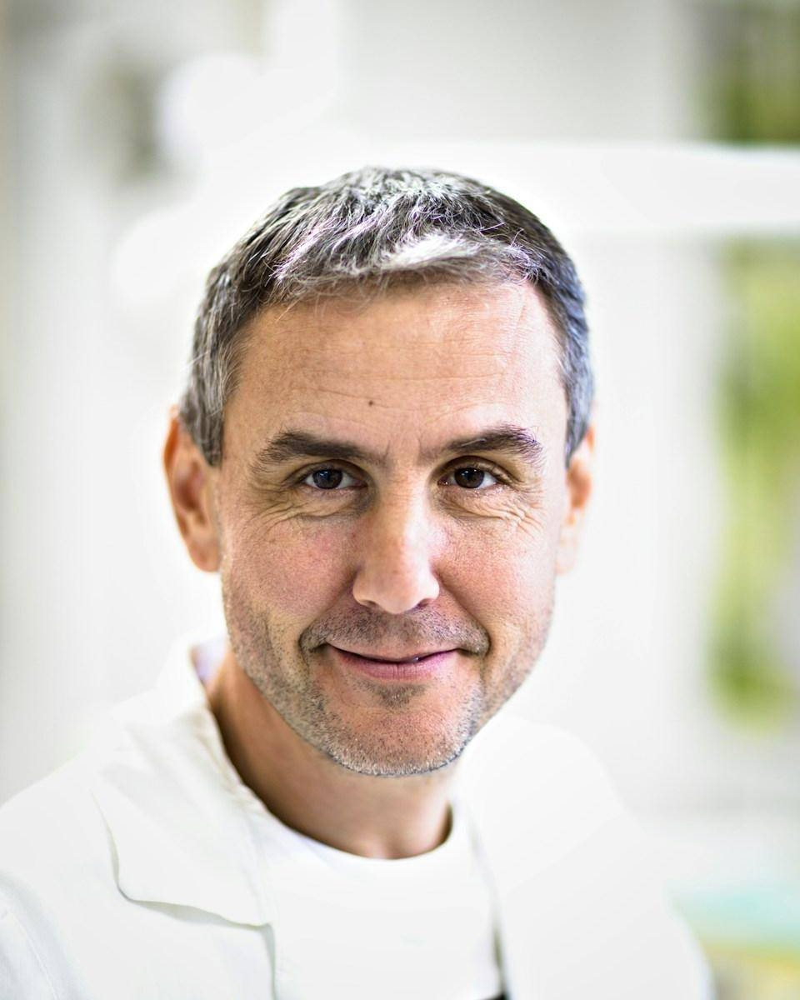
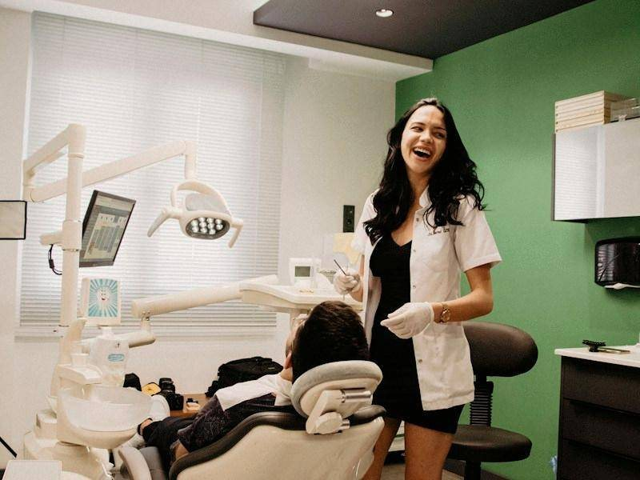
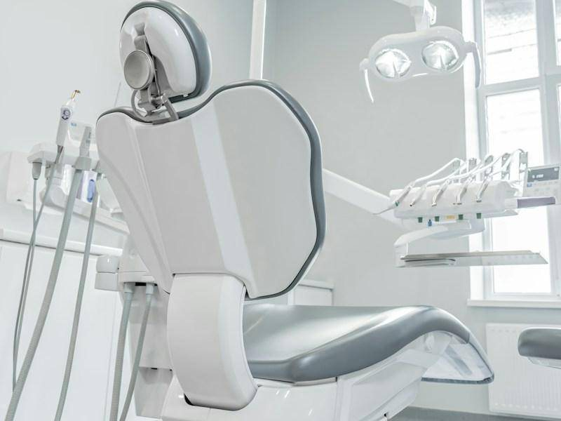
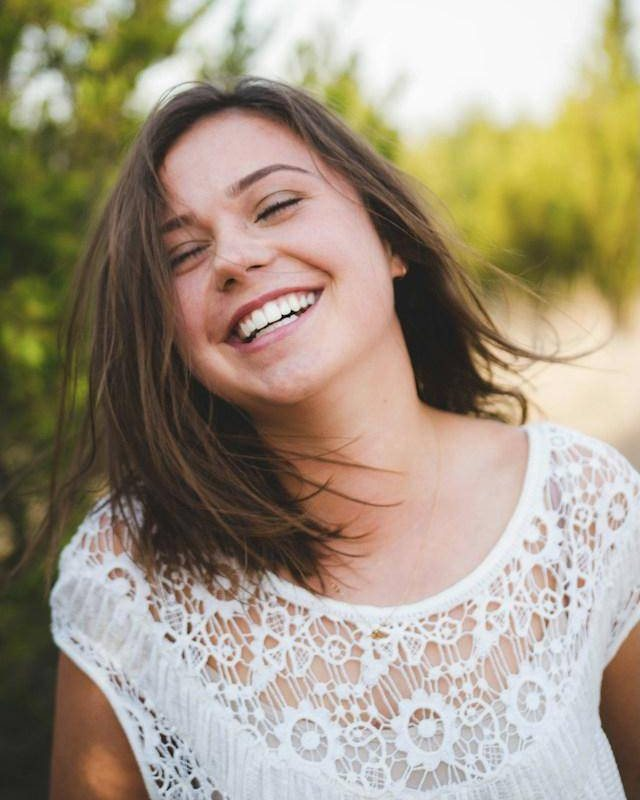

Limpeza e prevenção
Profilaxia, aplicação de flúor e orientação de higiene para manter os dentes saudáveis.
Uma clínica em Campinas para a família toda, com avaliação completa, plano de tratamento explicado e anestesia sem dor.

Da limpeza de rotina ao implante, tudo começa por uma avaliação para você entender o que precisa e o que pode esperar.
Profilaxia, aplicação de flúor e orientação de higiene para manter os dentes saudáveis.
Em consultório ou caseiro com moldeira, com acompanhamento para evitar sensibilidade.
Alinhadores transparentes planejados em 3D, com simulação do resultado antes de começar.
Reposição de dentes com implantes e prótese sobre implante, com tomografia para planejar cada caso.
Tratamento de canal com localizador eletrônico e, na maioria dos casos, em uma única sessão.
Primeira consulta lúdica, sem pressa, para a criança criar uma boa relação com o dentista.


Ambiente claro, silencioso e com horário respeitado. A gente explica cada etapa antes de começar.
Plano de tratamento por escritoVocê leva para casa as etapas, os prazos e os valores antes de decidir.
Anestesia com gel e aplicação lentaPara quem tem medo de agulha, o desconforto fica mínimo.
Lembrete pelo WhatsAppConfirmação um dia antes e retorno agendado na saída.

Atendemos com hora marcada, inclusive aos sábados. Estacionamento conveniado ao lado da clínica.
Atendemos os principais convênios odontológicos e também particular. Informe o seu no agendamento e confirmamos a cobertura.
Sim. A avaliação inclui exame clínico e, quando necessário, raio-x digital feito na própria clínica.
A recomendação é a primeira consulta logo após o nascimento dos primeiros dentes, ou até 1 ano de idade.
As formas de pagamento são apresentadas junto com o plano de tratamento, depois da avaliação.
Responda pelo WhatsApp e escolha o melhor horário. Leva menos de um minuto.